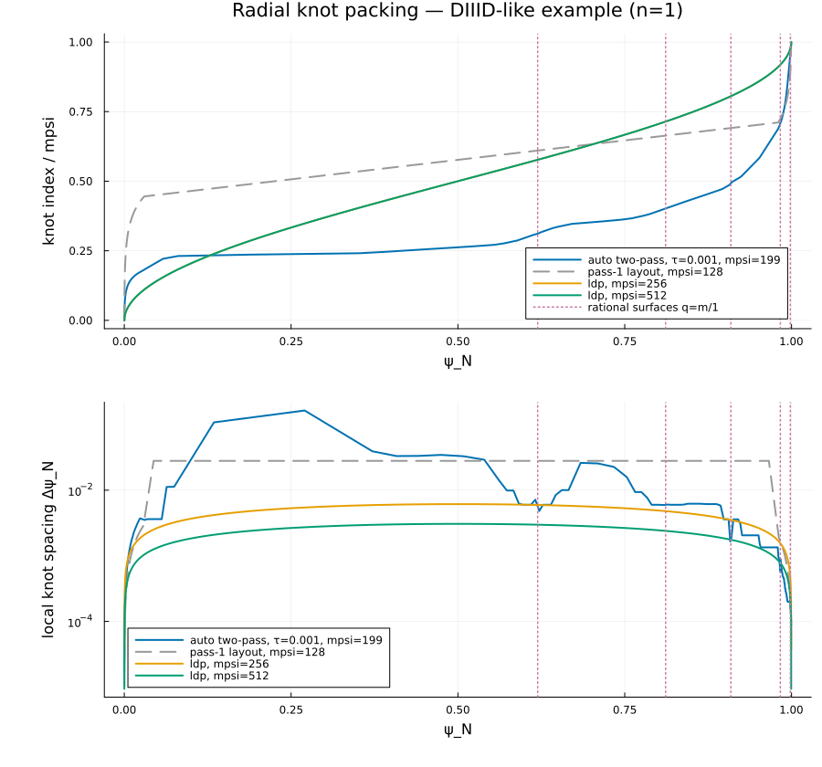
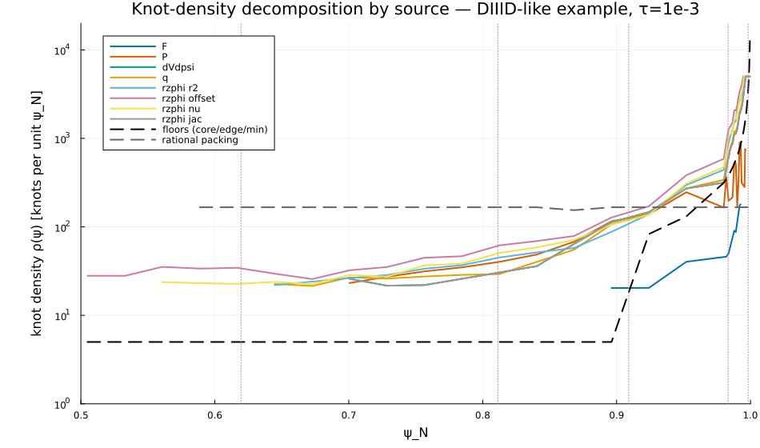

Equilibrium Module
The Equilibrium module provides tools to read, construct, and analyze magnetohydrodynamic (MHD) plasma equilibria. It wraps a variety of equilibrium file formats (EFIT, CHEASE, SOL, LAR, and others), runs the appropriate direct or inverse solver, and returns a processed PlasmaEquilibrium object ready for downstream calculations.
Overview
Key responsibilities of the module:
- Read equilibrium input files and TOML configuration (see
EquilibriumConfig). - Provide convenient constructors for analytic / model equilibria (Large
Aspect Ratio, Solovev).- Build spline representations used throughout the code (1D cubic and
2D bicubic splines).- Run the direct or inverse equilibrium solver and post-process results
(global parameters, q-profile finding, separatrix finding, GSE checks).The module exposes a small public API that covers setup, configuration, and common analyses used by other GPEC components (e.g. ForceFreeStates, vacuum interfaces).
EFIT solver strategies
When eq_type is one of the EFIT-based options, three solver strategies are available:
eq_type | Method | Best for |
|---|---|---|
"efit" | Geometric-angle field-line ODE | Default; fast and robust for standard cases |
"efit_arclength" | Arc-length field-line ODE | Near-separatrix surfaces where the geometric-angle ODE becomes singular |
"efit_by_inversion" | Contour.jl marching-squares → inverse solver | Highest geometric accuracy; avoids ODE singularities entirely |
efit integrates field lines using the geometric angle η (polar angle from the magnetic axis, 0→2π) as the independent variable. Position at each step is computed as R = R₀ + rfac·cos(η), so the RHS denominator is Bz·cos(η) − Br·sin(η) — the projection of B_pol onto the radial direction. Near an X-point where Bp → 0 this denominator passes through zero, causing a coordinate singularity: the ODE steps become extremely small or the solver fails to converge.
efit_arclength uses arc length along the flux surface as the independent variable instead. The tangent direction (dR/ds, dZ/ds) = ∇ψ⊥/|∇ψ| has unit magnitude by construction, so the position equations have no denominator and remain well-behaved all the way to the separatrix. The 1/Bp factors in the accumulated integrals still diverge near X-points, but their solver tolerances are set large so they do not restrict the step size — only the position tracking drives adaptivity. The two methods produce identical results when both succeed; efit_arclength extends the reliable range of psihigh closer to 1.
efit_by_inversion traces flux surface level sets directly from ψ(R,Z) using marching squares, resamples each closed curve to a uniform geometric-angle grid, and feeds the result into the inverse equilibrium solver (the same path used by CHEASE input). The Cartesian evaluation grid is clipped to the separatrix bounding box and its resolution is set adaptively from a bilinear interpolation error bound, so no manual tuning is needed.
Radial grid packing
With grid_type = "auto" and mpsi = 0 (the defaults), the radial grid is built by a two-pass measured-curvature refinement driven by the single accuracy knob psi_accuracy (τ):
- Pass 1 forms the equilibrium on a coarse three-region layout (geometric in log(ψ) at the core, uniform in the middle, geometric in log(1−ψ) at the edge).
- A knot density is derived from one sizing rule — the cubic-spline derivative error model err(f′) ≈ h³|f''''|/24 ≤ τ·|f| — applied to three sources of curvature |f''''|:
- Measured (mid-radius and edge): divided differences on the pass-1 nodes of the 1D profiles (F, P, dV/dψ, q), the 2D geometry channels (r², η-offset, ν, Jacobian) along sampled θ-lines (the bicubic ψ-axis shares the same knots), and the kinetic profiles (n, T, ω_E) when loaded, so steep pedestal gradients attract knots. Nodal values come from independent field-line integrations, so the estimate is immune to inter-knot spline ringing. Curvature is measured against ρ = √ψ, in which the equilibrium is regular at the magnetic axis — in ψ itself the geometry channels behave as ψ^(k/2) (R−R₀ ~ √ψ), so their ψ-curvature diverges under refinement while their ρ-curvature converges; the ρ-spacing maps back through dψ/dρ = 2√ψ, which by itself packs √ψ-tight toward the axis.
- Separatrix model (edge floor, ψ ≥ 0.9): the same rule on q ≈ −A·ln(1−ψ) gives geometric-in-log(1−ψ) packing with uniform relative q′ error, independent of A. Normally inactive — the pass-1 layout is already log-packed at the edge, so the measured density dominates — it only guards a pass-1 that under-sampled the divergence.
- Axis model (core, ψ ≤ 0.03): the same rule on the power-law axis form gives geometric-in-log(ψ) packing (constant-ratio spacing ∝ ψ down to
psilow). Here the model replaces measurement: nodal data from the smallest flux surfaces is dominated by integration and axis-extrapolation noise, which grid refinement amplifies rather than resolves. - Rational surfaces: local packing around every q = m/n in the requested n range (pinned as mandatory knots by the main driver), at any ψ including inside the modeled core region. This local resolution of the ψ-splined Euler-Lagrange coefficient matrices is what converges the Δ′ boundary-value problem.
- The density integral is equidistributed into the knot vector, mandatory rational-surface knots are inserted with a minimum-spacing snap guard, and pass 2 re-forms the equilibrium on the refined grid from the in-memory input (no file re-read).
Every region's knot count scales as τ^(-1/3), so tightening psi_accuracy refines the core, pedestal, and edge proportionally. The fixed grid_type = "core_edge_packed" (sin²-spaced), "pow1", "uniform", and explicit mpsi > 0 (single-pass, fixed layout) are still supported. A PlasmaEquilibrium built directly with mpsi = 0 keeps the coarse pass-1 grid until solve re-forms it; to refine it yourself, pass the nodes from refined_psi_grid to Equilibrium.reform.
The packing on the DIII-D-like example (n=1) compared to fixed core_edge_packed grids — note the coarse spacing across the smooth mid-radius, the spacing dips at each rational surface, and the core/pedestal/edge packing (benchmarks/plot_grid_knot_placement.jl regenerates this figure):

Decomposing the density by source on the same example shows the pedestal band (ψ_N ≈ 0.85–0.98) is driven by measured curvature, not the edge floor: the pressure, q, and dV/dψ profiles contribute comparably, and the rzphi geometry channels — the Grad-Shafranov response to the same pedestal p′ (Shafranov-shift / angle-offset steepening) — contribute the most at every node in the band. Because the density is measured from the formed solution, the packing follows the pedestal wherever it sits:

API Reference
GeneralizedPerturbedEquilibrium.Equilibrium — Module
EquilibriumReads or solves an MHD equilibrium and maps it to straight-field-line flux coordinates as a PlasmaEquilibrium.
Where code goes
Config.jl: the run configuration (EquilibriumConfig) and global parameters (EquilibriumParameters).PlasmaEquilibrium.jl: the result type and its spline containers.Construction.jl:run_inputfor each source type, thePlasmaEquilibriumconstructors, andreform.Sources/: one file per input format, each building aDirectRunInputorInverseRunInput(Ingest.jlholds those and the ingest types). A new analytic model is one file inSources/Analytic/holding its config and solver, plus oneANALYTIC_EQrow.Grid/: radial ψ grids, first-pass and refined.Axisymmetric/: code that assumes axisymmetry (the 2D solvers, the Grad-Shafranov residual, separatrix finding). A non-axisymmetric equilibrium gets a sibling folder.Derived/: quantities computed from a formedPlasmaEquilibrium.
GeneralizedPerturbedEquilibrium.Equilibrium.EQUIL_ABSTOL_MAX — Constant
Ceiling on the absolute tolerance of the equilibrium ODE solves, so a loose flux_surface_rtol never loosens abstol.
GeneralizedPerturbedEquilibrium.Equilibrium.AnalyticEqSpec — Type
AnalyticEqSpecSingle-source-of-truth entry describing one analytic-equilibrium kind: the gpec.toml section that carries its parameters, the *Config type built from that section, and the run function that turns the config into solver input.
Fields
section::String—gpec.tomlsection, the config type's name withoutConfig(e.g."Solovev")config_type::DataType—*Configtype, built from the section's keys as keywordsrun_fn::Function—(EquilibriumConfig, config) -> eq_inputsolver entry point
GeneralizedPerturbedEquilibrium.Equilibrium.AnalyticEquilibriumConfig — Type
AnalyticEquilibriumConfigSupertype of the parameter structs of the analytic equilibrium kinds. Each subtype is the config_type of one ANALYTIC_EQ row, which pairs it with an eq_type, its deck section, and its solver.
GeneralizedPerturbedEquilibrium.Equilibrium.DirectBField — Type
DirectBFieldInternal mutable struct to hold B-field components and their derivatives at a point. It is used as a temporary workspace to avoid allocations in tight loops.
GeneralizedPerturbedEquilibrium.Equilibrium.DirectIngest — Type
DirectIngestRaw arrays and scalars captured by a direct-equilibrium reader (read_efit, read_imas), enough to rebuild a DirectRunInput's splines via build_direct_from_ingest. Written to gpec.h5 so a run can be replayed without the original source.
Fields
sq_xs::Vector{Float64}— normalized-ψ knots for the 1D profile splinesq_fs::Matrix{Float64}— 1D profile node values (F, μ₀P, q, √ψ_norm)psi_xs::Vector{Float64}— R grid for the 2D flux map [m]psi_ys::Vector{Float64}— Z grid for the 2D flux map [m]psi_rz::Matrix{Float64}— processed poloidal flux on the (R, Z) grid [Wb/rad]rmin/rmax/zmin/zmax::Float64— computational-grid bounds [m]psio::Float64— total flux difference |ψaxis - ψboundary| [Wb/rad]bt_sign::Int— sign of the toroidal field (+1 or -1)ip_sign::Int— sign of the plasma current (+1 or -1) as the source file states it
GeneralizedPerturbedEquilibrium.Equilibrium.DirectRunInput — Type
DirectRunInput(...)Inputs to direct_run, built by a direct-equilibrium reader from the raw data.
Fields
config::EquilibriumConfig— the equilibrium configurationsq_in— 1D spline in normalized ψ of|F| = R·|B_t|(m·T),μ₀Pclipped at zero (T²),q,√ψ_normpsi_in— 2D interpolant of the poloidal flux on (R, Z),ψ_boundary - ψsigned positive at the axis (Wb/rad)psi_in_xs::Vector{Float64}— R coordinate grid for psi_in [m]psi_in_ys::Vector{Float64}— Z coordinate grid for psi_in [m]rmin::Float64— Minimum R-coordinate of the computational grid [m]rmax::Float64— Maximum R-coordinate of the computational grid [m]zmin::Float64— Minimum Z-coordinate of the computational grid [m]zmax::Float64— Maximum Z-coordinate of the computational grid [m]psio::Float64— Total flux difference|ψ_axis - ψ_boundary|[Wb/rad]bt_sign::Int— Sign of the toroidal field (+1 or -1), from the sign of Fip_sign::Int— Sign of the plasma current (+1 or -1) as the source states it (g-filecurrent, IMASglobal_quantities.ip); the internal flux is always positive at the axis, so this sign, not the computed current, sets the SFL→machine handednesshelicity = bt_sign × ip_signingest::EquilibriumIngest— captured raw arrays for thegpec.h5rerun snapshot (aDirectIngestfor file-based reads, ornothingfor analytic equilibria)psihigh_resolved::Float64— outer flux limit the solvers build their ψ grid on:config.psihigh, clamped to the outermost closed flux surface byresolve_psihigh!for efit-family equilibria (not IMAS)
GeneralizedPerturbedEquilibrium.Equilibrium.EquilibriumConfig — Type
EquilibriumConfig(...)An immutable struct containing configuration parameters for equilibrium reconstruction specified in the input.
Fields
eq_type::String- Type of equilibrium file ("efit", "chease", "ifile", "imas", ...); an analytic config implies its owneq_filename::String- Path to equilibrium input filejac_type::String- Jacobian coordinate type ("hamada", "pest", "equal_arc", "boozer", "park", "custom")power_bp::Int- Poloidal field power exponent for Jacobian (internal, derived fromjac_type; not a deck key)power_b::Int- Total field power exponent for Jacobian (internal, derived fromjac_type; not a deck key)power_r::Int- Major radius power exponent for Jacobian (internal, derived fromjac_type; not a deck key)power_rc::Int- Minor radius (rfac = √((R-R₀)²+(Z-Z₀)²)) power exponent for Jacobian (internal, derived fromjac_type; not a deck key)jac_custom_power_bp::Int- Poloidal-field exponent for a custom JacobianJ = Bp^bp · B^b / (R^r · rfac^rc); read only whenjac_type = "custom", ignored for named typesjac_custom_power_b::Int- Total-field exponent for a custom Jacobian; read only whenjac_type = "custom", ignored for named typesjac_custom_power_r::Int- Major-radius exponent for a custom Jacobian; read only whenjac_type = "custom", ignored for named typesjac_custom_power_rc::Int- Minor-radius (rfac) exponent for a custom Jacobian; read only whenjac_type = "custom", ignored for named typesr0_norm::Float64- Major radius normalization for CHEASE/EQDSK [m]b0_norm::Float64- On-axis toroidal field normalization for CHEASE/EQDSK [T]grid_type::String- Grid type for flux surface discretization ("auto" — two-pass measured-curvature refinement when mpsi=0, three-region log layout when mpsi>0; "coreedgepacked" (sin² spacing, dense at axis and edge), "pow1", "uniform"; inverse equilibria also "rho" (uniform in √ψ from psilow to psihigh) and "original" (the input file's own ψ nodes between psilow and psihigh; ignores mpsi))psilow::Float64- Lower limit of normalized flux coordinatepsihigh::Float64- Requested upper limit of normalized flux coordinate; the value the equilibrium is actually formed on isEquilibriumParameters.psihigh_resolved.mpsi::Int- Number of radial grid intervals; 0 with gridtype="auto" selects the two-pass auto grid. StandalonePlasmaEquilibriumcallers get the coarse pass-1 grid unless they refine via `refinedpsigrid+overridepsi_nodes`.psi_accuracy::Float64- Target relative accuracy τ of splined profile derivatives for the two-pass auto grid (knot count scales as τ^(-1/3))mtheta::Int- Number of poloidal grid pointsnewq0::Float64- Target on-axis safety factor q(0); the q and F profiles are rescaled to meet it (0 = use input value, -1 = use the axis extrapolation with its sign flipped)flux_surface_rtol::Float64- Relative tolerance of the ODE solves that trace each flux surface; their absolute tolerance isequil_abstol(flux_surface_rtol), i.e.flux_surface_rtolcapped atEQUIL_ABSTOL_MAXimas_cocos::Int- Expected COCOS convention of an IMASdd.equilibriuminput (11 = IMAS standard, 2 = GPEC internal)kinetic_file::String- Kinetic-profile file read once intoPlasmaEquilibrium.kinetic(seeread_kinetic_file); empty for none. Every kinetic consumer (NTV, tearing, the layer-overlap scan, grid refinement) derives its view from it.kinetic_group::String- HDF5 group ofkinetic_fileholding the profilesion_species,impurity_charge,impurity_mass,zeff_default,chi_e_default,chi_i_default,chi_phi_default,tau_E,resistivity_model,lnLambda_form- The plasma composition, profile defaults and resistivity closure applied to the profiles ofkinetic_file(seeKineticProfileData);nothingkeeps theKineticProfileDatadefault. Setting any of them needskinetic_file.
GeneralizedPerturbedEquilibrium.Equilibrium.EquilibriumParameters — Type
EquilibriumParametersA mutable struct containing computed equilibrium parameters and diagnostic flags.
Fields
ro::Union{Nothing,Float64}- R-coordinate of the magnetic axis [m]zo::Union{Nothing,Float64}- Z-coordinate of the magnetic axis [m]psio::Union{Nothing,Float64}- Total flux difference |ψaxis - ψboundary| [Wb/rad]psihigh_resolved::Union{Nothing,Float64}- Outer flux limit the equilibrium was formed on (the outermost ψ node); the plasma edge downstream ofPlasmaEquilibrium.rsep::Union{Nothing,Vector{Float64}}- R-coordinates of the plasma boundary [m]zsep::Union{Nothing,Vector{Float64}}- Z-coordinates of the plasma boundary [m]rext::Union{Nothing,Vector{Float64}}- R-coordinates of the plasma edge [m]zext::Union{Nothing,Vector{Float64}}- Z-coordinates of the plasma edge [m]psi0::Union{Nothing,Float64}- Normalized poloidal flux at reference locationb0::Union{Nothing,Float64}- Total magnetic field strength at the axis [T]q0::Union{Nothing,Float64}- Safety factor at the axisqmin::Union{Nothing,Float64}- Minimum safety factor in the plasmaqmax::Union{Nothing,Float64}- Maximum safety factor in the plasmaqa::Union{Nothing,Float64}- Safety factor at the plasma edgeq95::Union{Nothing,Float64}- Safety factor at 95% flux surfaceqextrema_psi::Union{Nothing,Vector{Float64}}- Normalized flux values at q extremaqextrema_q::Union{Nothing,Vector{Float64}}- Safety factor values at extremamextrema::Union{Nothing,Int}- Number of extrema in q-profilepsi_norm::Union{Nothing,Float64}- Normalized poloidal fluxpsi_axis::Union{Nothing,Float64}- Poloidal flux at the axispsi_boundary::Union{Nothing,Float64}- Poloidal flux at the boundarypsi_boundary_norm::Union{Nothing,Float64}- Normalized boundary fluxpsi_boundary_offset::Union{Nothing,Float64}- Boundary flux offsetpsi_axis_offset::Union{Nothing,Float64}- Axis flux offsetpsi_boundary_sign::Union{Nothing,Int}- Sign of boundary fluxpsi_axis_sign::Union{Nothing,Int}- Sign of axis fluxpsi_boundary_zero::Union{Nothing,Bool}- Whether boundary flux is zerormean::Union{Nothing,Float64}- Mean major radius [m]amean::Union{Nothing,Float64}- Mean minor radius [m]aratio::Union{Nothing,Float64}- Aspect ratio (R0/a)kappa::Union{Nothing,Float64}- Plasma elongationdelta1::Union{Nothing,Float64}- Upper triangularitydelta2::Union{Nothing,Float64}- Lower triangularitybt0::Union{Nothing,Float64}- Toroidal field at axis [T]crnt::Union{Nothing,Float64}- Plasma current [A], always positivebt_sign::Int- Sign of the toroidal field (+1 or -1;bt0is always positive)ip_sign::Int- Sign of the plasma current as the source file states it (+1 or -1)bwall::Union{Nothing,Float64}- Toroidal field at wall [T]verbose::Bool- Enable verbose outputdiagnose_src::Bool- Enable source data diagnosticsdiagnose_maxima::Bool- Enable extrema diagnosticsvolume::Union{Nothing,Float64}- Plasma volume [m³]betat::Union{Nothing,Float64}- Toroidal betabetan::Union{Nothing,Float64}- Normalized betabetaj::Union{Nothing,Float64}- Total betabetap1::Union{Nothing,Float64}- Poloidal beta (definition 1)betap2::Union{Nothing,Float64}- Poloidal beta (definition 2)betap3::Union{Nothing,Float64}- Poloidal beta (definition 3)li1::Union{Nothing,Float64}- Internal inductance (definition 1)li2::Union{Nothing,Float64}- Internal inductance (definition 2)li3::Union{Nothing,Float64}- Internal inductance (definition 3)
GeneralizedPerturbedEquilibrium.Equilibrium.FieldLineDerivParams — Type
FieldLineDerivParamsConstant parameters of the field-line ODE, read by direct_fieldline_der! and arclength_fieldline_der!.
GeneralizedPerturbedEquilibrium.Equilibrium.GeometryProfileSplines — Type
GeometryProfileSplinesNamed 1D cubic spline interpolants for flux-surface-averaged geometric quantities. Built once during equilibrium construction so they are available to every downstream module without per-caller recomputation.
Fields
xs::Vector{Float64}: Shared ψ axis (matchesrzphi_xs)area_spline: Flux-surface area ∫ dA(ψ) [m²]avg_r_spline: Surface-average minor radius ⟨r⟩(ψ) [m]avg_R_spline: Surface-average major radius ⟨R⟩(ψ) [m]
GeneralizedPerturbedEquilibrium.Equilibrium.GeometryProfileSplines — Method
GeometryProfileSplines(xs, area_vals, avg_r_vals, avg_R_vals; extrap=ExtendExtrap())Construct GeometryProfileSplines from arrays of surface-averaged values defined on the shared ψ grid xs. Uses CubicFit boundary conditions to match ProfileSplines.
GeneralizedPerturbedEquilibrium.Equilibrium.InverseIngest — Type
InverseIngestRaw arrays and scalars captured by an inverse-equilibrium reader (read_chease_ascii, read_chease_binary, read_ifile), enough to rebuild an InverseRunInput's splines via build_inverse_from_ingest. The inverse counterpart of DirectIngest.
Fields
sq_xs::Vector{Float64}— normalized-ψ knots for the 1D profile splinesq_fs::Matrix{Float64}— 1D profile node valuesrz_xs::Vector{Float64}— ψ grid for the R, Z mapsrz_ys::Vector{Float64}— θ grid for the R, Z mapsR_nodes::Matrix{Float64}— R node values on the (ψ, θ) grid [m]Z_nodes::Matrix{Float64}— Z node values on the (ψ, θ) grid [m]ro::Float64— R of magnetic axis [m]zo::Float64— Z of magnetic axis [m]psio::Float64— total flux difference |ψaxis - ψboundary| [Wb/rad]
GeneralizedPerturbedEquilibrium.Equilibrium.InverseRunInput — Type
InverseRunInput(...)Inputs to inverse_run, built by an inverse-equilibrium reader.
Fields
config::EquilibriumConfig- The equilibrium configuration objectsq_in::CubicSeriesInterpolant- 1D profile spline for F, P, qrz_in_xs::Vector{Float64}- ψ coordinate grid for rz_inrz_in_ys::Vector{Float64}- θ coordinate grid for rz_inrz_in_R::CubicInterpolantND- R coordinate interpolant [m]rz_in_Z::CubicInterpolantND- Z coordinate interpolant [m]ro::Float64- R-coordinate of magnetic axis [m]zo::Float64- Z-coordinate of magnetic axis [m]psio::Float64- Total flux difference |ψaxis - ψboundary| [Wb/rad]ingest::EquilibriumIngest- captured raw arrays for thegpec.h5rerun snapshot (anInverseIngestfor file-based reads, ornothingfor analytic equilibria)psihigh_resolved::Float64- outer flux limit the solvers build their ψ grid on:config.psihigh, clamped to the outermost input surface for i-files and reruns (resolve_psihigh!);efit_by_inversionforwards the value clamped on itsDirectRunInput
GeneralizedPerturbedEquilibrium.Equilibrium.IonSpecies — Type
IonSpecies(; z, m, fraction=NaN, density="")One main-ion species of the plasma. z/m are the charge (e) and mass (proton masses). The density is given by exactly one of fraction or density, which select a fraction of the total n_i profile or an explicit per-species profile (n_* dataset) in the kinetic file.
GeneralizedPerturbedEquilibrium.Equilibrium.KineticProfileData — Type
KineticProfileDataThe kinetic description of the plasma: the raw profile columns read from a kinetic file (HDF5 or ASCII), before resampling and spline construction, plus the plasma's species composition, the values that stand in for profiles the file omits, and the resistivity closure. psi (normalized poloidal flux) is always present; every profile field is nothing when the source omits it, so each consumer validates only the fields it needs. Units: densities m⁻³, temperatures eV, frequencies rad/s, diffusivities m²/s. Every consumer (KineticForces, the tearing layers, the layer-overlap scan) reads the composition and closure from here, so they all see one plasma.
| field | meaning |
|---|---|
n_i | main-ion density |
n_e | electron density |
T_i/T_e | ion / electron temperature |
omega_E | ExB rotation |
omega_tor | toroidal rotation (optional) |
chi_e | electron perpendicular heat diffusivity χ⊥,e |
chi_i | ion perpendicular heat diffusivity χ⊥,i |
chi_phi | toroidal momentum diffusivity χ_φ |
zeff | effective charge Z_eff(ψ) supplied directly (optional); the resistive-layer analysis prefers it to its closure |
species_densities | named per-species densities (e.g. "n_D", "n_T") for explicit multi-ion input; nothing for ASCII / no extras |
provenance | short string recording the source file/format |
ion_species | main-ion species, a Vector{IonSpecies}; default one deuterium ion carrying all of n_i |
impurity_charge | charge of the single impurity species that closes quasi-neutrality (default 6, carbon) |
impurity_mass | impurity mass in proton masses (default 12) |
zeff_default | Zeff used where neither a zeff profile nor `ni/n_e` gives one (default 1) |
chi_e_default | χ⊥,e used where the file has no usable chi_e (default 1) |
chi_i_default | χ⊥,i used where the file has no usable chi_i; nothing (default) makes a model that needs it fail |
chi_phi_default | χφ used where the file has no usable `chiphi` (default 1) |
tau_E | whole-plasma energy confinement time in s; nothing (default) when unknown |
resistivity_model | parallel-resistivity closure: :sauter (default), :redl, :spitzer, :spitzer_harm |
lnLambda_form | Coulomb-logarithm form of the closure: :nrl (default), :sauter, :wesson |
A profile dataset that is absent or all-zero counts as not provided, so its *_default applies. Build a copy with different settings with KineticProfileData(data; ion_species=..., ...).
GeneralizedPerturbedEquilibrium.Equilibrium.KineticProfileSplines — Type
KineticProfileSplinesNamed 1D cubic spline interpolants for kinetic profiles (densities, temperatures, ExB rotation, collisional diagnostics) on the regular kinetic ψ grid, with derivative views of the densities and temperatures for the diamagnetic frequencies of the NTV kernel.
Fields
xs::Vector{Float64}: Shared ψ axis (the regular kinetic grid)ni_spline,ne_spline: Ion / electron number densities [m⁻³]Ti_spline,Te_spline: Ion / electron temperatures [J]omegaE_spline: ExB rotation ω_E [rad/s]loglam_spline: Coulomb logarithmnui_spline,nue_spline: Krook collision frequencies [s⁻¹]zeff_spline: Effective charge Z_effni_deriv,ne_deriv,Ti_deriv,Te_deriv: Derivative views for ψ-derivative access
GeneralizedPerturbedEquilibrium.Equilibrium.KineticProfileSplines — Method
KineticProfileSplines(xs, ni, ne, Ti, Te, omegaE, loglam, nui, nue, zeff;
extrap=ExtendExtrap())Build the kinetic profile splines from arrays of values defined on the shared ψ grid xs. Uses CubicFit boundary conditions to match ProfileSplines. Temperatures must already be in Joules.
GeneralizedPerturbedEquilibrium.Equilibrium.LargeAspectRatioConfig — Type
LargeAspectRatioConfig(...)A struct holding parameters for the Large Aspect Ratio (LAR) plasma equilibrium model.
Fields:
r0: The major radius of the plasma [m].a: The minor radius of the plasma [m].beta0: The beta value on axis (normalized pressure).q0: The safety factor on axis.qa: Edge safety factor; not used by any currentsigma_type.B0: On-axis toroidal field in T (scales F and P).p_pres: The exponent for the pressure profile, defined asp00 * (1 - (r / a)^2)^p_pres.p_sig: The exponent that determines the shape of the current-related function profile.sigma_type: The sigma profile, "default", "wesson" (sigma0 * (1 - (r / a)^2)^p_sig) or "hollow" (sigma0 * (1 + hollow * (r / a)^2) * (1 - (r / a)^2)^p_sig, reversed shear whenhollowis large enough).hollow: The off-axis current enhancement of the "hollow" sigma profile (unused by the other profiles).mtheta: The number of grid points in the poloidal direction.ma: The number of grid points in the radial direction.zeroth: If set to true, it neglects the Shafranov shift
GeneralizedPerturbedEquilibrium.Equilibrium.PlasmaEquilibrium — Type
PlasmaEquilibrium(eq_config::EquilibriumConfig, source=nothing; override_psi_nodes=nothing, kinetic=nothing) -> PlasmaEquilibriumForm the equilibrium eq_config describes from source (see run_input), run the solver, and return it with global parameters, q-profile, and GSE diagnostics. Every other constructor ends here.
override_psi_nodes bypasses the config-driven radial grid (grid_type/mpsi) and forms the equilibrium on the given strictly increasing ψN node vector, whose endpoints must match psilow/psihigh (used by reform). The kinetic profiles named by `kineticfileare read and attached, unlesskinetic` passes already-read ones.
GeneralizedPerturbedEquilibrium.Equilibrium.PlasmaEquilibrium — Type
PlasmaEquilibrium(...)The final, self-contained result of the equilibrium reconstruction, in flux coordinates.
Fields
config::EquilibriumConfig: The equilibrium configuration object used for the reconstruction.params::EquilibriumParameters: Computed equilibrium parameters and diagnostics.profiles::ProfileSplines: Named 1D profile splines (F, P, dV/dψ, q) on normalized psi grid. Access values at grid points viaprofiles.F_spline.y[i], etc. Access derivatives viaprofiles.F_deriv.y[i]orprofiles.F_deriv(psi).geometry::GeometryProfileSplines: Named 1D splines for flux-surface-averaged geometry (area, ⟨r⟩, ⟨R⟩), populated automatically bycompute_geometry_profilesduring construction.Grid coordinates (shared by all rzphi/eqfun interpolants):
rzphi_xs::Vector{Float64}: ψ coordinates (length mpsi+1)rzphi_ys::Vector{Float64}: θ coordinates (length mtheta+1)
Geometric quantities (rzphi, 4 interpolants): 2D cubic interpolants for flux-coordinate mapping with periodic BC in theta.
- x value: normalized ψ
- y value: SFL poloidal angle ∈ [0, 1]
rzphi_rsquared::CubicInterpolantND: r_coord² = (R - ro)² + (Z - zo)²rzphi_offset::CubicInterpolantND: η/(2π) - θₙₑw (angle offset)rzphi_nu::CubicInterpolantND: ν in ϕ = 2πζ + ν(ψ, θ)rzphi_jac::CubicInterpolantND: Jacobian
Physics quantities (eqfun, 3 interpolants): 2D cubic interpolants storing local physics and geometric quantities.
- x value: normalized ψ
- y value: SFL poloidal angle θₙₑw
eqfun_B::CubicInterpolantND: Total magnetic field strength [T]eqfun_metric1::CubicInterpolantND: (e₁⋅e₂ + q⋅e₃⋅e₁)/(J⋅B²)eqfun_metric2::CubicInterpolantND: (e₂⋅e₃ + q⋅e₃⋅e₃)/(J⋅B²)
ro::Float64: R-coordinate of the magnetic axis [m]zo::Float64: Z-coordinate of the magnetic axis [m]psio::Float64: Total flux difference |Ψaxis - Ψboundary| [Weber/radian]ingest::EquilibriumIngest: raw arrays forwarded from the equilibrium input for thegpec.h5rerun snapshot — aDirectIngest/InverseIngestfor file-based equilibria, ornothingfor analytic ones (regenerated from their deck section on replay)analytic::Union{Nothing,AnalyticEquilibriumConfig}: the parameters an analytic kind (sol,lar,tj_analytic) was solved from, soreformcan re-solve it on a new grid;nothingfor file-based and IMAS equilibria.kinetic::Union{Nothing,KineticProfileData}: the raw kinetic profiles ofconfig.kinetic_file(or ofattach_kinetic_profiles!), on the file's own ψ grid;nothingwhen none are attached
GeneralizedPerturbedEquilibrium.Equilibrium.PlasmaEquilibrium — Method
PlasmaEquilibrium(path::AbstractString; eq_type="efit", kwargs...) -> PlasmaEquilibriumRead the equilibrium file at path and return the processed equilibrium. Convenience entry point of the scripting API: kwargs are EquilibriumConfig fields, so PlasmaEquilibrium("g000001.00001"; jac_type="hamada", mpsi=128) is the whole setup.
Only file-based equilibria go through this constructor. Analytic and IMAS equilibria have their own PlasmaEquilibrium(::AnalyticEquilibriumConfig) and PlasmaEquilibrium(::IMASdd.dd) forms.
eq = PlasmaEquilibrium("input.geqdsk"; jac_type="hamada")GeneralizedPerturbedEquilibrium.Equilibrium.PlasmaEquilibrium — Method
PlasmaEquilibrium(cfg::AnalyticEquilibriumConfig; kwargs...) -> PlasmaEquilibriumSolve the analytic equilibrium described by cfg and return the processed equilibrium. The eq_type is implied by the config type. kwargs are EquilibriumConfig fields.
eq = PlasmaEquilibrium(Equilibrium.SolovevConfig(; elongation=1.5); mpsi=0, psi_accuracy=1e-3)GeneralizedPerturbedEquilibrium.Equilibrium.PlasmaEquilibrium — Method
PlasmaEquilibrium(dd::IMASdd.dd; kwargs...) -> PlasmaEquilibriumRead the active equilibrium time slice of the IMAS data dictionary dd and return the processed equilibrium. kwargs are EquilibriumConfig fields; imas_cocos sets the ψ convention.
eq = PlasmaEquilibrium(dd; imas_cocos=11, jac_type="hamada")GeneralizedPerturbedEquilibrium.Equilibrium.ProfileSplines — Type
ProfileSplinesNamed 1D cubic spline interpolants for equilibrium profiles.
Fields
xs::Vector{Float64}: Shared x-axis (normalized psi)F_spline: 2π*F (toroidal flux function, where F = R * B_toroidal)P_spline: μ₀*P (plasma pressure × μ₀)dVdpsi_spline: dV/dψ (volume derivative)q_spline: q (safety factor)
Derivative Interpolants (for continuous derivative evaluation)
F_deriv,P_deriv,dVdpsi_deriv,q_deriv: First derivative interpolants
Notes
- Node values at grid points: Access via
spline.y[i] - Derivative at any point: Call
deriv(x)(derivative views are callable) - Grid: Access via
xsfield orspline.cache.x
GeneralizedPerturbedEquilibrium.Equilibrium.ProfileSplines — Method
ProfileSplines(xs, F_vals, P_vals, dVdpsi_vals, q_vals; extrap=ExtendExtrap())Create ProfileSplines from arrays of profile values. Uses CubicFit boundary conditions with extension extrapolation.
GeneralizedPerturbedEquilibrium.Equilibrium.ResolvedNTVSpecies — Type
ResolvedNTVSpecies{P}One fully-resolved species in the NTV sum — a main ion, the neutrality-closing impurity, or the electrons. Fields: charge z, mass m (proton masses), electron flag, label, and profiles (a KineticProfileSplines view carrying this species' density as ni_spline and its full-composition collision frequency as nui_spline). Produced by resolve_ntv_species; both NTV paths — the KineticForces ψ-quadrature and the self-consistent kinetic-matrix build — iterate this and sum τ = Σs τs.
GeneralizedPerturbedEquilibrium.Equilibrium.SolovevConfig — Type
SolovevConfig(...)A struct holding parameters for the Solov'ev (SOL) plasma equilibrium model.
Fields:
mr: number of radial grid zonesmz: number of axial grid zonesma: number of flux grid zoneselongation: elongationa: minor radiusr0: major radiusq0: safety factor at the o-pointp0fac: scale on-axis pressure (P-> P+P0*p0fac. beta changes. Phi,q constant)b0fac: scale toroidal field at constant beta (sPhi,sf,s^2*P. bt changes. Shape,beta constant)f0fac: scale toroidal field at constant pressure (s*f. beta,q changes. Phi,p,bp constant)
GeneralizedPerturbedEquilibrium.Equilibrium.TJAnalyticConfig — Type
TJAnalyticConfig(...)Parameters for the TJ-analytic cylindrical large-aspect-ratio equilibrium, a GPEC adaptation of the analytic profile family of R. Fitzpatrick's TJ code (https://github.com/rfitzp/TJ), not a re-implementation of TJ. The q profile is
f1(r) = [1 - (1-r²)^ν] / (ν·q0)
q(r) = r² / f1(r)with the current peaking ν solved so q matches qa at the edge (ν = qa/q0 at lowest order). The pressure is p₂(r) = p0·(1-r²)^μ with μ = pressure_peaking. Lengths are normalized to R₀, fields to B₀. solver picks the pipeline: :inverse feeds the flux-surface geometry to the inverse solver, :direct builds ψ(R, Z) for the direct solver.
GeneralizedPerturbedEquilibrium.Equilibrium.TJAnalyticShapeParams — Type
Internal parameter bundle for the TJ-analytic shape ODE (ψ, g₂, H₁, H₁', f₃) — GPEC adaptation of the analytic shape ODE used in R. Fitzpatrick's TJ code (https://github.com/rfitzp/TJ), shared by the inverse and direct pipelines.
Fields:
- physical: a, R0, qc, mu, pc, B0
- derived: epsa2 = (a/R0)²
- near-axis BC constants: rmin, x0 = rmin, r0 = rmin·a, f1c = 1/qc, p2ppc = d²p₂/dx²|_0 = −2·μ·pc
GeneralizedPerturbedEquilibrium.Equilibrium._axis_bisection_seed — Method
_axis_bisection_seed(rp, bfield, sq_in_deriv, r, z, halfwidth; passes) -> (r, z, failure)Seed for the Newton restart: alternate 1-D bisections on B_Z along R and on B_R along Z, each bracketed by doubling halfwidth up to the grid edges. The sweep is a nonlinear Gauss–Seidel iteration that contracts by ψRZ²/(ψRR ψZZ) per pass, so stopping once a pass moves the point by less than `AXISSEEDCELLTOLcells leaves it within about a cell of the axis for contractions up to 0.9.failurenames a missing sign change or a sweep that did not settle inpasses` passes.
GeneralizedPerturbedEquilibrium.Equilibrium._axis_failure — Method
_axis_failure(rp, bfield, sq_in_deriv, r, z; bound_residual) -> failureWhy (r, z) is not an acceptable magnetic axis, or nothing. It must lie on the ψ grid (a root off it is an artifact of spline extrapolation), be an O-point (det ∂(B_R,B_Z)/∂(R,Z) = det(Hess ψ)/R² > 0; an X-point has det < 0) that is a maximum of ψ (ψ_RR < 0 and ψ > 0), and carry ψ within AXIS_PSI_RATIO of ψ₀, which rejects a secondary maximum elsewhere in the grid. With bound_residual, |B_p| ≤ AXIS_RESIDUAL_RTOL × B_scale must hold as well.
GeneralizedPerturbedEquilibrium.Equilibrium._axis_newton — Method
_axis_newton(rp, bfield, sq_in_deriv, r, z, cap) -> (r, z, failure)Newton iteration for the O-point B_R = B_Z = 0, each step capped at cap. failure is nothing once a step passes |δR|, |δZ| ≤ AXIS_STEP_RTOL × R, else why the iteration stopped. A singular Jacobian stops it, where the Fortran divides by the determinant unguarded.
GeneralizedPerturbedEquilibrium.Equilibrium._build_psi_grid — Method
_build_psi_grid(equil_params, psilow, psihigh)Resolve mpsi and build psi_nodes for any supported grid_type. For "auto" with mpsi=0 this is the coarse pass-1 layout of the two-pass refinement (see refined_psi_grid).
GeneralizedPerturbedEquilibrium.Equilibrium._cubic_resample — Method
Cubic spline of y(x) on the irregular input grid, evaluated at x_new with smooth cubic extrapolation, as Fortran PENTRC spline_fit(..., "extrap").
GeneralizedPerturbedEquilibrium.Equilibrium._density_from_curvature! — Method
_density_from_curvature!(rho, d4, f_scale, tau; xs=nothing)Accumulate (in place, by max) the knot density implied by the h³ derivative error model for one quantity: ρ = 1/htarget with htarget = (24·τ·fscale/|f''''|)^(1/3), clamped to [`HTARGETMIN,HTARGETMAX]. Normalized curvature below the noise floor is ignored; whenxsis given the floor grows asNODENOISEREL`/hlocal⁴ on tightly packed sample grids, where divided differences amplify nodal noise.
GeneralizedPerturbedEquilibrium.Equilibrium._equidistribute — Method
_equidistribute(xs, rho, N) -> Vector{Float64}Place N+1 nodes from xs[1] to xs[end] by equidistributing the density integral M(ψ) = ∫ρ dψ (trapezoid, piecewise-linear inversion). Requires ρ > 0 everywhere.
GeneralizedPerturbedEquilibrium.Equilibrium._find_magnetic_axis — Method
_find_magnetic_axis(rp, bfield, sq_in_deriv, r0, z0, march_step) -> (r, z)The magnetic axis, by the first attempt whose Newton result passes _axis_failure: plain Newton from the midplane guess (r0, z0), accepted on the step test alone, then Newton restarted from a bisection seed with steps capped at one march step and the residual bound added. A restart warns with the field at the axis; two failures error.
GeneralizedPerturbedEquilibrium.Equilibrium._fourth_derivative_nodes — Method
_fourth_derivative_nodes(xs, ys) -> Vector{Float64}Estimate |f''''| at each node of a (possibly nonuniform) grid by 5-point Newton divided differences: f'''' ≈ 4!·f[x{i-2},…,x{i+2}]. The two nodes at each boundary reuse the nearest interior stencil. Returns zeros when fewer than 5 nodes are available.
GeneralizedPerturbedEquilibrium.Equilibrium._is_closed_curve — Method
_is_closed_curve(curve)Returns true if the Contour.jl curve is closed (first ≈ last vertex).
GeneralizedPerturbedEquilibrium.Equilibrium._knot_density — Method
_knot_density(equil::PlasmaEquilibrium; tau, kin=nothing) -> Vector{Float64}Knot density ρ(ψ) (knots per unit ψN) at the pass-1 nodes equil.profiles.xs: the max of the measured curvature density of the 1D profiles (F, P, dV/dψ, q), the four rzphi geometry channels (every `THETASTRIDE-th θ-line), and the kinetic profiles whenkin` is given, smoothed by a running max over ±1 node, then the core and edge model regions and a global minimum density.
GeneralizedPerturbedEquilibrium.Equilibrium._midplane_axis_guess — Method
_midplane_axis_guess(rp, bfield, sq_in_deriv) -> (r, z, step)Initial guess for the axis: march outward along the grid's midplane Z, in steps of a twentieth of the grid width, until B_z ≥ 0.
GeneralizedPerturbedEquilibrium.Equilibrium._read_1d_gfile_format — Method
_read_1d_gfile_format(lines_block, num_values) -> Vector{Float64}Parse num_values reals from Fortran fixed-width (16-character) fields in lines_block, warning on unparsable fields or a short read.
GeneralizedPerturbedEquilibrium.Equilibrium._read_fortran_reals — Method
_read_fortran_reals(io, n) -> Vector{Float64}Read one little-endian Fortran sequential unformatted record of n reals, stored as real4 or real8 (told apart by the record length).
GeneralizedPerturbedEquilibrium.Equilibrium._read_kinetic_ascii — Method
Read a legacy 6-column ASCII kinetic table into a KineticProfileData.
GeneralizedPerturbedEquilibrium.Equilibrium._read_kinetic_h5 — Method
Read the GPEC HDF5 kinetic schema. Only psi is required; other standard datasets are optional and surfaced as-is. Non-standard n_* datasets become named per-species densities.
GeneralizedPerturbedEquilibrium.Equilibrium._read_kinetic_table — Method
Parse a 6-column kinetic profile table, dropping # comments and non-numeric header rows. Returns the six columns.
GeneralizedPerturbedEquilibrium.Equilibrium._separatrix_crossing — Method
_separatrix_crossing(rp, bfield, sq_in_deriv, ro, zo, r_edge, label) -> rMidplane separatrix crossing on the r_edge side of the axis: unbracketed Newton δR = −ψ/ψ_R toward ψ = 0 of the renormalized spline, as in the Fortran, so that it extrapolates past the grid edge for limited equilibria whose box hugs the LCFS. Each failed attempt moves the initial guess, a blend of r_edge and the axis, inward.
GeneralizedPerturbedEquilibrium.Equilibrium._validate_psi_nodes — Method
_validate_psi_nodes(psi_nodes, psilow, psihigh) -> Vector{Float64}Check that an externally supplied ψ node vector is strictly increasing and spans exactly psilow to psihigh; errors otherwise.
GeneralizedPerturbedEquilibrium.Equilibrium._winding_number_verts — Method
_winding_number_verts(verts, r_test, z_test)Winding number point-in-polygon test (Sunday algorithm) on a Ctr.vertices vector. Returns the signed winding count; nonzero means the test point is inside the polygon. More robust than ray-casting for near-collinear edges (e.g., surfaces near an x-point).
GeneralizedPerturbedEquilibrium.Equilibrium.adaptive_grid_params — Method
adaptive_grid_params(raw_profile, ro, zo, r_lo, r_hi, z_lo, z_hi,
psilow, Δψ, bbox_curve) → (nr, nz, β_r, β_z)Physics-based Cartesian grid sizing for contour-tracing equilibrium reconstruction.
Computes required cell widths from the bilinear interpolation error bound δψ ≈ (dR²·|ψRR| + dZ²·|ψZZ|)/8 ≤ Δψ → dRreq = √(8Δψ/|ψRR|) sampled at each LCFS vertex (reusing bbox_curve), plus an axis constraint ensuring the innermost surface (psilow) has ≥ 5 cells per semi-axis on the global grid.
β = acosh(hmax/hmin) from the ratio of coarsest to finest required cell widths. n = 1 + ⌈span·sinch(β)/h_min⌉ where sinch(β) = β/sinh(β).
GeneralizedPerturbedEquilibrium.Equilibrium.analytic_eq_type — Method
analytic_eq_type(cfg::AnalyticEquilibriumConfig) -> StringThe internal eq_type token of the ANALYTIC_EQ row whose config type cfg is.
GeneralizedPerturbedEquilibrium.Equilibrium.arclength_fieldline_der! — Method
arclength_fieldline_der!(dy, y, params, s)RHS for the arc-length-parameterized level-set ODE.
State y = [R, Z, ∫dl/Bp, ∫dl/(R²Bp), ∫jac·dl/Bp]. The independent variable s is arc length, in m.
The tangent direction (dR/ds, dZ/ds) = (∂ψ/∂Z, −∂ψ/∂R) / |∇ψ| follows the ψ = const level set counterclockwise, staying on the flux surface without correction.
Near x-points where Bp → 0, the position integration (dy[1:2]) remains well-behaved because grad_norm never appears in the denominator alone. dy[3:5] use abstol=1e20 so the solver never restricts step size for them.
GeneralizedPerturbedEquilibrium.Equilibrium.arclength_fieldline_int — Method
arclength_fieldline_int(psifac, raw_profile, ro, zo, rs2, theta_nodes) -> (y_out, bfield)Arc-length-parameterized flux surface integration. Drop-in replacement for direct_fieldline_int with identical return format, sampled at the straight-fieldline angles theta_nodes (see sample_trace_at_sfl_angles):
y_out[:, 1]: geometric angle η ∈ 0 to 2π (CCW from outboard midplane)y_out[:, 2]: accumulated ∫dl/Bpy_out[:, 3]: rfac = √((R−ro)² + (Z−zo)²)y_out[:, 4]: accumulated ∫dl/(R²Bp)y_out[:, 5]: accumulated ∫jac·dl/Bp
The ODE is terminated by a ContinuousCallback that detects the return to the outboard midplane (Z = zo, R > ro) after a minimum arc-length guard.
GeneralizedPerturbedEquilibrium.Equilibrium.area_to_rootarea_weight — Method
area_to_rootarea_weight(equil, psi, ft) -> Matrix{ComplexF64}Inverse of rootarea_to_area_weight: the area-weighted → root-area-weighted field operator √A·Σ⁻¹ = √jarea · inv(sqrtamat), mapping b̄ → b̃ (b̃ = √A·Σ⁻¹·b̄). Pharr 2026.
GeneralizedPerturbedEquilibrium.Equilibrium.attach_kinetic_profiles! — Method
attach_kinetic_profiles!(equil, path; group="/", kwargs...) -> equil
attach_kinetic_profiles!(equil, data::KineticProfileData) -> equilAttach kinetic profiles to equil as equil.kinetic. Every kinetic consumer (the NTV torque, the calculated kinetic matrices, tearing, the layer-overlap scan and the two-pass grid refinement) derives its own view from them, so the file is read once. Equilibria built from a config with kinetic_file set attach it on construction; use this for analytic or IMAS equilibria built without it, or in-memory data. Keywords are the composition, default and closure fields of KineticProfileData, e.g. ion_species, impurity_charge, chi_e_default, resistivity_model.
GeneralizedPerturbedEquilibrium.Equilibrium.bracket_mandatory_nodes — Method
bracket_mandatory_nodes(grid, centers, min_half_widths, min_spacing; collapse_atol=1e-7) -> Vector{Float64}Center each rational centers[i] inside a single clean spline interval by replacing the knots straddling it with a symmetric pair at centers[i] ± w, so the cubic 3rd derivative the Δ′ extraction samples does not jump mid-stencil. w is the larger of min_half_widths[i] (the Δ′-stencil floor) and half the local grid spacing, capped at half the distance to neighboring centers (and, for the stencil part, to the nearer domain edge). Knots within w of the center or within min_spacing of a new bracket knot are dropped; endpoints always win. Warns when a cap cuts a bracket below its stencil floor, since Δ′ there is less accurate.
GeneralizedPerturbedEquilibrium.Equilibrium.build_direct_from_ingest — Method
build_direct_from_ingest(config::EquilibriumConfig, ingest::DirectIngest) -> DirectRunInputRebuild a DirectRunInput's splines from a DirectIngest (from read_efit/read_imas, or restored from Input/RawInputs/Equilibrium/ in gpec.h5), so a rerun skips the g-file/IMAS parse.
GeneralizedPerturbedEquilibrium.Equilibrium.build_inverse_from_ingest — Method
build_inverse_from_ingest(config::EquilibriumConfig, ingest::InverseIngest) -> InverseRunInputRebuild an InverseRunInput's splines from an InverseIngest, so a rerun skips the CHEASE or i-file parse.
GeneralizedPerturbedEquilibrium.Equilibrium.check_equil_solve — Method
check_equil_solve(sol, what)Return the equilibrium ODE solution sol, or raise an error naming the solve what if the integrator stopped early (step limit, step-size underflow, instability) instead of finishing or terminating on its callback.
GeneralizedPerturbedEquilibrium.Equilibrium.clamp_psihigh_to_separatrix — Method
clamp_psihigh_to_separatrix(raw_profile) -> (clamped_psihigh, was_adjusted)Binary-searches for the highest psihigh ≤ raw_profile.psihigh_resolved at which the ψ level set is still a closed curve in the EFIT grid. Returns the safe value and a Bool indicating whether any clamping occurred.
GeneralizedPerturbedEquilibrium.Equilibrium.classify_topology — Method
classify_topology(raw_profile, psio; xpt_threshold=0.05) → SymbolClassify the plasma topology as :limited, :sn_lower, :sn_upper, or :double_null by evaluating ψ on the (R, Z) grid and finding the minimum in each Z half-domain.
An x-point is detected when the minimum ψ in a half-domain falls below xpt_threshold * psio.
GeneralizedPerturbedEquilibrium.Equilibrium.compute_geometry_profiles — Method
compute_geometry_profiles(pe::PlasmaEquilibrium) → GeometryProfileSplinesConvenience method that takes the rzphi grids and interpolants from a PlasmaEquilibrium.
GeneralizedPerturbedEquilibrium.Equilibrium.compute_geometry_profiles — Method
compute_geometry_profiles(rzphi_xs, rzphi_ys,
rzphi_rsquared, rzphi_offset, rzphi_jac, ro)
→ GeometryProfileSplinesBuild named cubic splines for flux-surface-averaged area, ⟨r⟩, and ⟨R⟩ from the equilibrium's 2D rzphi interpolants, by trapezoidal sums over the θ nodes at the bicubic's nodal values.
GeneralizedPerturbedEquilibrium.Equilibrium.compute_jac_delpsi — Method
compute_jac_delpsi(equil, psi, mtheta) -> Vector{Float64}Compute J·|∇ψ| at mtheta equally-spaced θ points on the flux surface at psi. This is the area weight function that maps a bare field component b(θ) to its area-weighted form J|∇ψ|·b(θ) in θ-space, the flux per unit-norm cell.
GeneralizedPerturbedEquilibrium.Equilibrium.compute_sqrt_jac_delpsi — Method
compute_sqrt_jac_delpsi(equil, psi, mtheta) -> Vector{Float64}Compute √(J·|∇ψ|) at mtheta equally-spaced θ points on the flux surface at psi. This is the √weight function that maps a field component b(θ) to its root-area-weighted form √(J|∇ψ|)·b(θ) in θ-space.
GeneralizedPerturbedEquilibrium.Equilibrium.compute_sqrtamat — Method
compute_sqrtamat(equil, psi, ft) -> Matrix{ComplexF64}Build the √A convolution matrix sqrtamat. Produces a Hermitian Toeplitz matrix with entries sqrtamat[m',k] = ŵ{mk − m'} where ŵn = (1/N)Σ wj exp(+inθ_j) and w(θ) = √(J·|∇ψ|).
For Fourier coefficients b_fft of a field b it satisfies ‖sqrtamat·b_fft‖² = ∫ |b|² · J|∇ψ| dθ (θ normalized to one period), which is Jacobian-invariant on a given flux surface. sqrtamat/√jarea is the matrix Fortran GPEC writes as J_surf_2.
GeneralizedPerturbedEquilibrium.Equilibrium.direct_fieldline_der! — Method
direct_fieldline_der!(dy, y, params, eta)Right-hand side of the geometric-angle field-line ODE, with state y = [∫dl/Bp, rfac, ∫dl/(R²Bp), ∫jac·dl/Bp] and independent variable the geometric angle eta. Port of Fortran direct_fl_der, guarded against a vanishing denominator.
GeneralizedPerturbedEquilibrium.Equilibrium.direct_fieldline_int — Method
direct_fieldline_int(psifac, raw_profile, ro, zo, rs2, theta_nodes) -> (y_out, bfield)Traces the flux surface psifac (ψ_norm) in the geometric angle η from the outboard midplane, refining onto the surface after every step.
Arguments
ro,zo: magnetic axis coordinates, in mrs2: R of the outboard separatrix crossing, in mtheta_nodes: straight-fieldline angles (0 to 1) at which to sample the surface
Returns
y_out: rows attheta_nodes(seesample_trace_at_sfl_angles), columns η, ∫dl/Bp, rfac (distance from the axis), ∫dl/(R²Bp), ∫jac·dl/Bpbfield: theDirectBFieldat the start point
GeneralizedPerturbedEquilibrium.Equilibrium.direct_get_bfield! — Method
direct_get_bfield!(bf_out, r, z, psi_in, sq_in, sq_in_deriv, psio; derivs=0)Evaluates ψ, the profiles F and P, and the poloidal field with its derivatives at (R, Z), in place in bf_out. Port of Fortran direct_get_bfield.
Arguments
psi_in: 2D cubic interpolant of the poloidal fluxψ(R,Z)sq_in,sq_in_deriv: profile seriesF(ψ_norm),P(ψ_norm)and its derivativepsio: ψ at the magnetic axis; ψ_norm = 1 - ψ/psioderivs: number of ψ derivatives to evaluate (0, 1, or 2)
GeneralizedPerturbedEquilibrium.Equilibrium.direct_position! — Method
direct_position!(raw_profile)Finds the magnetic axis (O-point, see _find_magnetic_axis) and the inboard and outboard separatrix crossings on its midplane, and replaces the ψ(R, Z) spline in raw_profile by one renormalized so that ψ at the axis equals ψ₀. A g-file whose header signs disagree with its ψ grid errors here.
Returns
ro,zo: magnetic axis coordinates, in mrs1,rs2: R of the inboard and outboard separatrix crossings, in m
GeneralizedPerturbedEquilibrium.Equilibrium.direct_refine — Method
direct_refine(rfac, eta, psi0, params) -> Float64Newton-refines the distance rfac from the axis at geometric angle eta so the point lies on the surface ψ = psi0.
GeneralizedPerturbedEquilibrium.Equilibrium.edge_q_law — Method
edge_q_law(equil; psi_max, psi_min=EDGE_MODEL_PSI_MIN, min_knots=EDGE_FIT_MIN_KNOTS,
min_r2=EDGE_FIT_MIN_R2, shear_ratio=EDGE_FIT_SHEAR_RATIO)
-> nothing | (; A, q_bar, u_bar, n_knots, r2_log, r2_linear)Least-squares fit of the separatrix edge law q = q̄ + A·(ln(1−ψ) − ū) over the equilibrium's outer knots. It only gates the grid-refinement edge density floor; placing surfaces beyond the grid is separatrix_q_law, and geometric X-point detection is classify_topology.
Returns nothing when the diverging model does not describe the edge:
- fewer than
min_knotsknots in the band; A ≥ 0, i.e. q not rising toward ψ = 1;r2_log < min_r2;r2_log ≤ r2_linear(a linear-in-ψ fit does at least as well, as for a limited plasma);- the fitted
Aand the measured-(1−ψ)·q′differ by more thanshear_ratio.
GeneralizedPerturbedEquilibrium.Equilibrium.enforce_min_spacing — Method
enforce_min_spacing(grid, hmin) -> Vector{Float64}Drop interior nodes so no two kept nodes are closer than hmin, preserving both endpoints. Guards against noise-level packing, e.g. the edge of a core_edge_packed/pow1 grid at high mpsi.
GeneralizedPerturbedEquilibrium.Equilibrium.equil_abstol — Function
equil_abstol(rtol, cap=EQUIL_ABSTOL_MAX)Absolute tolerance of an equilibrium ODE solve: follows flux_surface_rtol but is never looser than cap.
GeneralizedPerturbedEquilibrium.Equilibrium.equilibrium_global_parameters! — Method
equilibrium_global_parameters!(pe::PlasmaEquilibrium)Compute the global equilibrium parameters (rmean, amean, kappa, bt0, crnt, betas, li, ...) and store them in pe.params. Port of Fortran equil_out_global.
GeneralizedPerturbedEquilibrium.Equilibrium.equilibrium_gse! — Method
equilibrium_gse!(equil::PlasmaEquilibrium)Computes the Grad-Shafranov residual on the grid and, with diagnose_src, writes it to HDF5 files. Port of Fortran equil_out_gse.
Returns (; xs, ys, flux_x, flux_y, source, total, error, errori) on the rzphi (ψ, θ) nodes: the two flux-divergence terms, the source, the residual total = flux_x - flux_y + source, error = |total| over the largest term on the grid, and errori, the magnitude of the θ-integrated residual on each surface.
GeneralizedPerturbedEquilibrium.Equilibrium.equilibrium_qfind! — Method
equilibrium_qfind!(equil::PlasmaEquilibrium)Find the extrema of q(ψ) and store them with q0, qmin, qmax, qa and q95 in equil.params. Port of Fortran equil_out_qfind.
GeneralizedPerturbedEquilibrium.Equilibrium.equilibrium_separatrix_find! — Method
equilibrium_separatrix_find!(pe::PlasmaEquilibrium)Find the separatrix midplane radii rsep and the top/bottom extremal points (rext, zext, with zsep = zext), store them in pe.params, and return them. Port of Fortran equil_out_sep_find.
GeneralizedPerturbedEquilibrium.Equilibrium.equilibrium_solver — Function
equilibrium_solver(raw_profile, fieldline_int=direct_fieldline_int; override_psi_nodes=nothing) -> PlasmaEquilibriumDirect equilibrium driver: locates the axis, traces each flux surface with fieldline_int, and builds the profile, rzphi coordinate and eqfun splines in straight-fieldline coordinates.
Arguments
fieldline_int: flux-surface tracer, called asfieldline_int(psifac, raw_profile, ro, zo, rs2, theta_nodes) -> (y_out, bfield)withy_outsampled attheta_nodesthroughsample_trace_at_sfl_anglesoverride_psi_nodes: explicit ψ grid used instead of the configured one
GeneralizedPerturbedEquilibrium.Equilibrium.equilibrium_solver_by_inversion — Method
equilibrium_solver_by_inversion(raw_profile; resolution_factor=4.0, override_psi_nodes=nothing) -> PlasmaEquilibriumDriver for contour-tracing equilibrium reconstruction.
Grid parameters (n and β in each direction) are computed adaptively from the bilinear interpolation error bound along the LCFS and an axis constraint. resolution_factor scales both n values uniformly (higher → more points, same β).
Select via eq_type = "efit_by_inversion" in gpec.toml.
GeneralizedPerturbedEquilibrium.Equilibrium.flux_surface_area — Method
flux_surface_area(equil, psi, mtheta) -> Float64Compute ⟨J·|∇ψ|⟩_θ on the flux surface at psi: the periodic trapezoidal rule on mtheta equally spaced θ points (θ = 1 duplicates θ = 0).
GeneralizedPerturbedEquilibrium.Equilibrium.flux_surface_metric — Method
flux_surface_metric(equil, psi, theta; hint=(Ref(1), Ref(1))) -> (; r, jac, delpsi)Evaluate the flux-surface geometry at (psi, theta): major radius r, Jacobian jac, and the flux-gradient magnitude delpsi = |∇ψ|, by metric_from_primitives on the bicubic at that point.
GeneralizedPerturbedEquilibrium.Equilibrium.gfile_fpol_single_precision — Method
gfile_fpol_single_precision(filename) -> BoolWhether the g-file's FPOL column was written in single precision: every value lies within 1e-8 (relative) of its Float32 rounding. Double-precision values printed to the format's ten digits sit about 1.5e-8 from it on average, so a whole column below 1e-8 is single precision.
GeneralizedPerturbedEquilibrium.Equilibrium.implied_knot_count — Method
implied_knot_count(equil::PlasmaEquilibrium; tau, kin=nothing) -> IntKnot count the density model implies for a formed equilibrium; a post-refinement diagnostic that flags a pass-1 grid that under- or over-sampled a feature.
GeneralizedPerturbedEquilibrium.Equilibrium.inverse_extrap — Method
inverse_extrap(xx::Matrix{Float64}, ff::Matrix{Float64}, x::Float64) -> Vector{Float64}Component-wise Lagrange extrapolation of a vector-valued function to x.
Arguments
xx:m × nabscissae, rowiholding the x-values of pointifor each of the n componentsff:m × nfunction values atxx
GeneralizedPerturbedEquilibrium.Equilibrium.kinetic_profile_splines — Method
kinetic_profile_splines(data::KineticProfileData;
zi::Int=1, zimp::Int=6, mi::Int=2, mimp::Int=12,
density_factor::Float64=1.0, temperature_factor::Float64=1.0,
ExB_rotation_factor::Float64=1.0, toroidal_rotation_factor::Float64=1.0,
chi1::Union{Nothing,Float64}=nothing)
→ KineticProfileSplinesThe NTV view of raw kinetic profiles (e.g. equil.kinetic): interpolate onto a regular 101-point ψ grid, optionally apply profile scaling knobs, derive collisional / Z_eff diagnostics, and return a KineticProfileSplines with independent named cubic splines.
Needs n_e, T_i, T_e and omega_E; n_i defaults to n_e. See read_kinetic_file for the file formats.
Arguments
data: Raw kinetic profiles (KineticProfileData)zi,zimp: Main ion and impurity charge numbersmi,mimp: Main ion and impurity mass numbers (in proton masses)density_factor: Density scaling factor (applied to ni, ne)temperature_factor: Temperature scaling factor (applied to Ti, Te)ExB_rotation_factor: ExB rotation scaling factor (applied to omegaE after rotation reform)toroidal_rotation_factor: Toroidal rotation scaling factor (scales total wphi = omegaE + wdian + wdiat)chi1: Poloidal flux normalization2π·ψ₀— required whendensity_factor,temperature_factor, ortoroidal_rotation_factordiffer from 1.0
Scaling
When density_factor, temperature_factor or toroidal_rotation_factor differ from 1, the total rotation wphi = omegaE + wdian + wdiat is held from the unscaled profiles, the diamagnetic frequencies scale with temperature_factor (density_factor cancels), and omegaE is reformed as toroidal_rotation_factor * wphi - wdian - wdiat. ExB_rotation_factor then multiplies omegaE.
Collisionality is recomputed from the scaled profiles (unlike Fortran PENTRC); use nufac (in KineticForcesControl) to scale collisionality independently.
GeneralizedPerturbedEquilibrium.Equilibrium.lar_init_conditions — Method
lar_init_conditions(rmin, lar_input) -> (r, y)Initializes the starting radius and state vector for solving the LAR ODE system.
Arguments:
rmin: Normalized starting radius (as a fraction oflar_a).lar_input: ALargeAspectRatioConfigobject containing equilibrium parameters.
Returns:
r: Physical radius corresponding tormin * lar_a.y: Initial state vector of length 5.
GeneralizedPerturbedEquilibrium.Equilibrium.make_multi_stretched_grid — Method
make_multi_stretched_grid(lo, hi, centers, n, β) → Vector{Float64}Build a 1D grid of length n on [lo, hi] with sinh-stretching toward each point in centers. The domain is split at each interior concentration point; each resulting sub-interval uses:
- symmetric (double-ended) sinh when both endpoints are concentration points
- one-sided sinh fine at the concentration-point end otherwise
Domain boundaries (lo, hi) are concentration points only if they appear in centers, as x-points do on the clipped plasma bounding box. Returns a uniform grid if β ≤ 0.
GeneralizedPerturbedEquilibrium.Equilibrium.make_optimal_psi_grid — Method
make_optimal_psi_grid(psilow, psihigh, N_core, N_mid, N_edge; psi_split_core, psi_split_edge)Build a three-region ψ grid with (Ncore + Nmid + N_edge)+1 knots, using the counts directly as provided — core and edge are geometric in log(ψ) and log(1−ψ) respectively; middle is uniform in ψ.
GeneralizedPerturbedEquilibrium.Equilibrium.make_stretched_r_grid — Method
make_stretched_r_grid(r_lo, r_hi, ro, nr, β_r) → Vector{Float64}Grid of nr points on [r_lo, r_hi] concentrated near ro (magnetic axis). Thin wrapper around make_multi_stretched_grid.
GeneralizedPerturbedEquilibrium.Equilibrium.make_stretched_z_grid — Method
make_stretched_z_grid(z_lo, z_hi, zo, nz, topology, β_z) → Vector{Float64}Grid of nz points on [z_lo, z_hi] concentrated near zo (magnetic axis) and near each x-point boundary (at z_lo for :sn_lower/:double_null, at z_hi for :sn_upper/:double_null). Thin wrapper around make_multi_stretched_grid.
GeneralizedPerturbedEquilibrium.Equilibrium.merge_mandatory_nodes — Method
merge_mandatory_nodes(grid, mandatory; delta_frac=0.25, collapse_atol=1e-7) -> Vector{Float64}Insert mandatory knots into a base grid without moving them: non-mandatory nodes within δmin = `deltafrac× (containing base-grid interval) of a mandatory node are dropped. Endpoints always win, so mandatory nodes outside the open span or within δ_min of an endpoint are discarded. Mandatory nodes withincollapse_atol` of an earlier one are treated as duplicates and collapsed.
GeneralizedPerturbedEquilibrium.Equilibrium.metric_from_primitives — Method
metric_from_primitives(ro, theta, p) -> (; rfac, r, jac, delpsi)The gpout.f flux-surface metric at one point from the rzphi primitives p (the fields of rzphi_primitives): minor radius rfac = √r², major radius r, Jacobian jac and delpsi = |∇ψ|. The primitives may come from evaluating the bicubic or from its nodal values.
GeneralizedPerturbedEquilibrium.Equilibrium.multi_ion_composition — Method
multi_ion_composition(zs, ns, ne; zimp, mimp) -> (zeff, zpitch, n_main, n_imp)Full-composition effective charge and pitch-angle enhancement at one ψ point for a plasma with an arbitrary number of main-ion species:
zs,ns: main-ion charges and number densities (one entry per species)ne: electron densityzimp,mimp: single trailing impurity charge / mass; its density closes quasineutrality
Composition (per point):
n_main = Σ_s n_s total main-ion number density
n_imp = (n_e − Σ_s z_s n_s) / z_imp impurity density from quasineutrality
Zeff = (Σ_s z_s² n_s + z_imp² n_imp) / n_e
zpitch = 1 + (1+m_imp)/(2 m_imp)·z_imp·(Zeff−1)/(z_imp−Zeff) momentum-restoring closureReduces exactly to the single-ion form Zeff = z_imp − (n_i/n_e)·z_i·(z_imp−z_i) for one main-ion species.
GeneralizedPerturbedEquilibrium.Equilibrium.read_chease_ascii — Method
read_chease_ascii(config) -> InverseRunInputParse an ASCII CHEASE file, build the 1D and 2D splines with R0/B0 normalization, find the magnetic axis, and bundle them into an InverseRunInput for the inverse solver.
GeneralizedPerturbedEquilibrium.Equilibrium.read_chease_binary — Method
read_chease_binary(config) -> InverseRunInputParses a binary CHEASE file, creates initial 1D and 2D splines with proper normalization (R0, B0 scaling), and bundles them into a InverseRunInput object.
GeneralizedPerturbedEquilibrium.Equilibrium.read_efit — Method
read_efit(config::EquilibriumConfig) -> DirectRunInputParse the EFIT g-file config.eq_filename into the 1D profile spline and 2D ψ(R, Z) interpolant for the direct solver.
GeneralizedPerturbedEquilibrium.Equilibrium.read_ifile — Method
read_ifile(config) -> InverseRunInputRead an inverse i-file, such as TokaMaker save_ifile writes: little-endian Fortran unformatted records, reals as real8 or real4, axis first, θ fastest.
mx, my(int32);psi(mx)[Wb/rad],f(mx)= R·Bt [T·m],p(mx)[Pa],q(mx)r(my, mx),z(my, mx)[m], with the periodic θ point duplicated- optional
FF′(mx),p′(mx)per Wb/rad, skipped - optional
[ψ_axis, ψ_LCFS]: ψN is then normalized to this LCFS, so the last file surface (written just inside it) sits below ψN = 1
Port of Fortran read_eq_ldp_i.
GeneralizedPerturbedEquilibrium.Equilibrium.read_imas — Method
read_imas(config::EquilibriumConfig, dd) -> DirectRunInputLoad an equilibrium from an IMAS data dictionary and return a DirectRunInput.
The dd.equilibrium.time_slice[] is used (active time slice). Poloidal flux is converted from the IMAS COCOS convention (set by config.imas_cocos) to the internal COCOS 2 convention:
imas_cocos = 11(default, IMAS standard): divide ψ by 2πimas_cocos = 2(GPEC internal): no conversion
Arguments
config:EquilibriumConfigwitheq_type = "imas"andimas_cocosset.dd: populatedIMASdd.ddwithdd.equilibrium.time_slice[]containing:global_quantities.psi_axis,global_quantities.psi_boundaryprofiles_1d.psi,profiles_1d.f,profiles_1d.pressure,profiles_1d.q- the
profiles_2dentry withgrid_type.index == 1(rectangular), supplyinggrid.dim1(R),grid.dim2(Z) andpsi
GeneralizedPerturbedEquilibrium.Equilibrium.read_kinetic_file — Method
read_kinetic_file(path; group="/") -> KineticProfileDataRead a kinetic-profile file, dispatching on extension: HDF5 (.h5/.hdf5) via the GPEC kinetic schema, otherwise a 6-column ASCII table (.gpeckf/.kin/.dat: psi_n n_i n_e T_i[eV] T_e[eV] omega_E). Returns the raw columns; downstream consumers validate the fields they require.
GeneralizedPerturbedEquilibrium.Equilibrium.refined_psi_grid — Method
refined_psi_grid(equil::PlasmaEquilibrium; tau, kin=nothing, mandatory=Float64[], pinned=Float64[],
singfac_min=1e-4, n_min=1, bracket_coef=BRACKET_COEF,
min_spacing=MIN_KNOT_SPACING, N_cap=REFINED_N_CAP) -> Vector{Float64}Build the refined pass-2 ψ grid from a formed pass-1 equilibrium: knot density, equidistribution, enforce_min_spacing, then bracket_mandatory_nodes around rational surfaces.
Arguments
tau- target interpolation accuracy (psi_accuracy)kin- optional kinetic profiles whose gradients attract knotsmandatory- rational-surface ψ values to bracket (never knotted on)pinned- ψ values inserted as plain knots without a cleared zonesingfac_min,n_min- set each surface's half-stencildpsi = singfac_min/(n_min·|q′|); the bracket half-width isbracket_coef·dpsi, floored atmin_spacing
GeneralizedPerturbedEquilibrium.Equilibrium.reform — Method
reform(equil::PlasmaEquilibrium, psi_nodes::Vector{Float64}) -> PlasmaEquilibriumRe-form equil on the ψN nodes `psinodesfrom the source it remembers: the storedanalyticconfig, else its rawingest, so no file is re-read; with neither it re-readsconfig.eq_filename. Its kinetic profiles carry over. The node endpoints must matchpsilow/psihigh`.
GeneralizedPerturbedEquilibrium.Equilibrium.resample_contour_to_theta_grid! — Method
resample_contour_to_theta_grid!(R_out, Z_out, curve, ro, zo, theta_grid)Resample a Contour.jl curve onto the geometric-angle grid theta_grid (in turns), writing into R_out and Z_out. Fits a periodic cubic spline to log ρ(η) about the axis (ro, zo), so the resampled radius stays positive and the curve cannot self-intersect, which keeps it robust near x-points where R(η), Z(η) splines overshoot.
GeneralizedPerturbedEquilibrium.Equilibrium.resolve_ntv_species — Method
resolve_ntv_species(data::KineticProfileData, ion_species; electron, zimp, mimp, ...) -> Vector{ResolvedNTVSpecies}Resolve the full NTV species set for a multi-ion run: the main ions, the neutrality-closing impurity (zimp, mimp, density from quasineutrality), and the electrons if electron. Both NTV paths (the KineticForces quadrature and the self-consistent kinetic-matrix build) loop over and sum this set. Errors on any negative density.
Each descriptor's profiles carries that species' density as ni_spline and its full-composition Krook collision frequency (Logan & Park 2013 Eq. 6) as nui_spline; the other profiles are shared. A main ion's density is fraction · n_i (n_i is the total main-ion density) or the named n_* dataset given by density (e.g. "n_D"). In a mixed fraction/density list the impurity content is set by the file's ni/ne deficit. The zpitch closure is exact for z=1 main ions and approximate otherwise. Reduces to kinetic_profile_splines for one z=1 main ion with fraction=1.
GeneralizedPerturbedEquilibrium.Equilibrium.resolve_psihigh! — Method
resolve_psihigh!(raw_profile) -> raw_profileClamp raw_profile.psihigh_resolved to the outermost closed flux surface, warning if the requested psihigh had none. Mutates and returns the input; config.psihigh keeps the request.
GeneralizedPerturbedEquilibrium.Equilibrium.resolve_psihigh! — Method
resolve_psihigh!(input::InverseRunInput) -> InverseRunInputClamp input.psihigh_resolved to the outermost input surface (below ψ_N = 1 for an i-file that carries the LCFS bounds), warning when it moves. config.psihigh keeps the request.
GeneralizedPerturbedEquilibrium.Equilibrium.rootarea_to_area_weight — Method
rootarea_to_area_weight(equil, psi, ft) -> Matrix{ComplexF64}Build the root-area-weighted → area-weighted field operator Σ/√A = sqrtamat ./ √jarea at the flux surface psi, where jarea = ∫ J|∇ψ| dθ is the scalar flux-surface area. It maps the coordinate-invariant root-area-weighted field b̃ to the area-weighted field b̄: b̄ = (Σ/√A)·b̃ (both in tesla); b̄ is not coordinate-invariant and serves only to recover field or flux (Φ = A·b̄). Pharr 2026.
GeneralizedPerturbedEquilibrium.Equilibrium.run_input — Method
run_input(eq_config::EquilibriumConfig, source) -> DirectRunInput or InverseRunInputBuild the solver input for eq_config from source: nothing reads eq_config.eq_filename, an AnalyticEquilibriumConfig runs its analytic solver, an IMASdd.dd is read by read_imas, and a run input rebuilt from a stored ingest is rebound onto eq_config.
GeneralizedPerturbedEquilibrium.Equilibrium.rzphi_primitives — Method
rzphi_primitives(equil, psi, theta; hint=(Ref(1), Ref(1))) -> (; r2, deta, jac, r2_y, deta_y)Evaluate the smooth rzphi primitives at (psi, theta): r², the η-offset, the Jacobian and the θ-derivatives of r² and the offset; metric_from_primitives turns them into the metric. ψ-derivatives are not provided because the bicubic is only C¹ in ψ; differentiate a ψ-resample instead.
GeneralizedPerturbedEquilibrium.Equilibrium.sample_trace_at_sfl_angles — Method
sample_trace_at_sfl_angles(sol, y_out, sfl_index, theta_nodes, state_row) -> Matrix{Float64}Sample a traced flux surface at the straight-fieldline angles theta_nodes (0 to 1). Row i is state_row(sol(t), t, lo) at the time t where the normalised SFL angle reaches theta_nodes[i] (see sfl_sample_time), in the 5-column y_out layout. The last row is the saved closed endpoint, so the surface totals y_out[end, :] are exact. Every surface sharing the same abscissae keeps the resample error from varying between neighbouring surfaces. Every field-line tracer must return its surface through this function.
GeneralizedPerturbedEquilibrium.Equilibrium.select_plasma_contour — Method
select_plasma_contour(curve_list, ro, zo)From the list of Contour.jl curves at a given ψ level, return the closed curve whose interior contains the magnetic axis (ro, zo).
Returns nothing if no qualifying closed curve is found.
GeneralizedPerturbedEquilibrium.Equilibrium.separatrix_q — Method
q on the separatrix law.
GeneralizedPerturbedEquilibrium.Equilibrium.separatrix_q_dqdpsi — Method
dq/dψ on the separatrix law.
GeneralizedPerturbedEquilibrium.Equilibrium.separatrix_q_law — Method
separatrix_q_law(equil; psi_max=equil.profiles.xs[end], shear_ratio=SEPARATRIX_SHEAR_RATIO)
-> nothing | (; psi_x, A, r_x, z_x, psi_anchor, q_anchor, shear_ratio)Safety factor beyond the equilibrium's ψ grid from the X-point(s) on its last closed flux surface:
q(ψ) = q_anchor + Σ_i A_i ln[(psi_x_i − psi_anchor) / (psi_x_i − ψ)]psi_x are the normalized fluxes of the selected saddles (ascending, so psi_x[1] is where q diverges), A their logarithmic coefficients F / (2π R_X sqrt(−det H)), r_x/z_x their positions, and the anchor is the traced q at psi_max. psi_x[1] need not equal 1: a reconstruction may place its boundary slightly inside the X-point flux.
Returns nothing when the law does not apply or cannot be trusted:
- the equilibrium is not a direct (2D flux) one — an inverse equilibrium carries its own q;
- no minimum of the poloidal field on the outermost surface leads to a saddle outside the grid (a plasma with no X-point nearby; a limited plasma that has one still gets a law);
- q is not rising at the anchor;
- the law's dq/dψ and the traced profile's differ by more than
shear_ratioover the outer knots (returned asshear_ratio, law over traced).
GeneralizedPerturbedEquilibrium.Equilibrium.separatrix_q_psi — Method
ψ at which the separatrix law reaches q_target. Returns nothing when the target is not beyond the anchor, or lies closer to the separatrix flux than psi_gap.
GeneralizedPerturbedEquilibrium.Equilibrium.sfl_sample_time — Method
sfl_sample_time(sol, ts, sfl, sfl_index, x) -> (t, lo)Solver time t at which the normalised straight-fieldline angle reaches x ∈ [0, 1], and the index lo of the saved step that starts its bracket. sfl is the SFL integral ∫jac·dl/Bp at the saved times ts; it is monotone, so it brackets the root to one step, and Brent finishes on component sfl_index of the dense solution.
GeneralizedPerturbedEquilibrium.Equilibrium.shift_exb_rotation — Method
shift_exb_rotation(kp::KineticProfileSplines, Δω::Real) -> KineticProfileSplinesThe same kinetic profiles with the E×B rotation rigidly shifted, ω_E(ψ) + Δω (rad/s), and every other profile unchanged. A rotation change moves the E×B frequency and leaves the diamagnetic frequencies, which the torque kernel derives from the density and temperature gradients, where they are; this is the scan variable of a torque-versus-rotation table.
GeneralizedPerturbedEquilibrium.Equilibrium.sol_run — Method
sol_run(equil_inputs, sol_inputs) -> DirectRunInputBuild the Solov'ev analytic ψ(R, Z) and 1D profiles from sol_inputs as direct-solver input. Port of Fortran sol.f.
GeneralizedPerturbedEquilibrium.Equilibrium.tj_analytic_f1 — Method
tj_analytic_f1(x, nu, qc)TJ-analytic poloidal flux function f1(x) where x = r/a, following the analytic-profile parameterization of R. Fitzpatrick's TJ code (https://github.com/rfitzp/TJ). Uses a Taylor expansion near the axis for numerical stability.
GeneralizedPerturbedEquilibrium.Equilibrium.tj_analytic_f1p — Method
tj_analytic_f1p(x, nu, qc)Derivative of the TJ-analytic f1 with respect to x (= r/a). See R. Fitzpatrick's TJ code (https://github.com/rfitzp/TJ) for the original parameterization.
GeneralizedPerturbedEquilibrium.Equilibrium.tj_analytic_find_nu — Method
TJ-analytic ν root-find (Fitzpatrick's Setnu / GetNu in https://github.com/rfitzp/TJ): solve for ν so that q₂(x=1) matches qa_target.
q₂ = x²·(1+εa²·g₂)·exp(−εa²·f3/f1)/f1; at x=1 and low β this picks up an O(εa²) correction relative to the lowest-order guess ν = qa/qc, which matters for the TJ-analytic benchmark at large ε. Falls back to the lowest-order ν if the root-find has no bracket or does not converge; an error from a trial shaping solve propagates.
GeneralizedPerturbedEquilibrium.Equilibrium.tj_analytic_run — Method
tj_analytic_run(equil_input, tj_input)Solve the TJ-analytic equilibrium with the pipeline tj_input.solver names, :inverse (tj_analytic_run_inverse) or :direct (tj_analytic_run_direct).
GeneralizedPerturbedEquilibrium.Equilibrium.tj_analytic_run_direct — Method
tj_analytic_run_direct(equil_input, tj_input; nrbox=257, nzbox=257, rc=1.2)Build ψ(R, Z) on an nrbox × nzbox grid from the TJ-analytic model and return it as direct-solver input, so q and δW are recomputed from the 2D geometry instead of taken from the prescribed q₂ (the inverse pipeline under-drives the external kink at large ε). Each grid point is mapped to (r, w) by the fixed-point iteration of TJ's EFIT writer; ψ comes from the radial ψ-ODE for r < 1, TJ's vacuum solution GetPSIvac for 1 ≤ r < rc, and that value at rc scaled by r²/rc² beyond (r, rc in units of a). Edge shaping is Hna = Vna = 0, so only the H₁ Shafranov shift contributes.
GeneralizedPerturbedEquilibrium.Equilibrium.tj_analytic_run_inverse — Method
tj_analytic_run_inverse(equil_input, tj_input)Build the TJ-analytic equilibrium of tj as inverse-solver input. With zero edge shaping (Hna = Vna = 0, the TJ benchmark configuration) the flux surfaces are shifted circles
R(r,θ) = R₀ + Δ(r) + α(r)·r·cos θ
Z(r,θ) = α(r)·r·sin θwith Δ = R₀·εa²·H₁(x), α = 1 − εa²·(x²/8 − H₁/2), εa = a/R₀ and x = r/a, from the shaping ODE. The output profiles are F = R₀·B₀·(1 + εa²·g₂) and q₂ = x²·(1 + εa²·g₂)·exp(−εa²·f₃/f1)/f1. The n ≥ 2 shaping harmonics Hₙ, Vₙ are not included.
GeneralizedPerturbedEquilibrium.Equilibrium.tj_analytic_shape_initial — Method
Initial conditions at x = x0, matching the TJ-analytic model's near-axis expansion (cf. R. Fitzpatrick's TJ code, https://github.com/rfitzp/TJ).
GeneralizedPerturbedEquilibrium.Equilibrium.tj_analytic_shape_rhs! — Method
RHS for the TJ-analytic shape ODE (R. Fitzpatrick's TJ code parameterization, https://github.com/rfitzp/TJ). State: y[1]=ψ, y[2]=g₂, y[3]=H₁, y[4]=H₁', y[5]=f₃. The original derivation is written in x = r/a; we advance in physical r = a·x so d/dr = (1/a)·d/dx.
The params argument carries TJAnalyticShapeParams fields plus the current nu.
GeneralizedPerturbedEquilibrium.Equilibrium.tj_analytic_shape_solve — Method
Integrate the TJ-analytic shape ODE for the given ν. Pass saveat to collect output on a prescribed dense grid (used by tj_analytic_run_direct so the downstream Hₙ / ψ splines sit on uniform nodes); leave it nothing for the default adaptive save pattern used by tj_analytic_run_inverse. reltol and abstol go to the Vern9 solve; abstol defaults to equil_abstol(reltol).
GeneralizedPerturbedEquilibrium.Equilibrium.wants_two_pass — Method
wants_two_pass(config::EquilibriumConfig) -> BoolTrue when the config requests the automatic two-pass grid: grid_type = "auto" with mpsi = 0 and a positive psi_accuracy.
GeneralizedPerturbedEquilibrium.Equilibrium.write_kinetic_h5 — Method
write_kinetic_h5(path, data; group="/", schema_version="1.0", provenance=data.provenance)Write a KineticProfileData to the GPEC HDF5 kinetic schema. Each present field is written as a dataset with a units attribute; absent (nothing) fields are skipped. Named per-species densities (species_densities, n_* datasets) round-trip with read_kinetic_file. The group carries schema_version and provenance attributes.
GeneralizedPerturbedEquilibrium.Utilities.save_to_hdf5 — Method
save_to_hdf5(target, equil::PlasmaEquilibrium)Save the processed equilibrium profiles, geometry, and derived scalar quantities, and record its deck sections in Input/.
Important types
EquilibriumConfig— configuration container, built from the[Equilibrium]
section of `gpec.toml` or from keywords.PlasmaEquilibrium— the runtime structure containing spline fields,
geometry, profiles, and computed diagnostics (q-profile, separatrix,
etc.).SolovevConfig,LargeAspectRatioConfig,TJAnalyticConfig— the parameters of the
analytic equilibria. A deck states one as a `[Solovev]`, `[LargeAspectRatio]` or
`[TJAnalytic]` section, which selects the equilibrium, so it sets no `eq_type`.
`[TJAnalytic] solver = "inverse" | "direct"` picks the TJ pipeline.Key functions
PlasmaEquilibrium(file; eq_type="efit", kwargs...),PlasmaEquilibrium(analytic_config; kwargs...)
and `PlasmaEquilibrium(dd; kwargs...)` — read or solve the equilibrium and return a
`PlasmaEquilibrium`; `kwargs` are `EquilibriumConfig` fields.PlasmaEquilibrium(config::EquilibriumConfig, source=nothing)— the form every other
constructor ends in, with `source` an analytic config, an IMAS `dd`, or `nothing` to read `eq_filename`.equilibrium_separatrix_find!(pe::PlasmaEquilibrium)— locate
separatrix and related boundary geometry in-place.equilibrium_global_parameters!(pe::PlasmaEquilibrium)— populate
common global parameters (major radius, magnetic axis, volumes, etc.).equilibrium_qfind!(pe::PlasmaEquilibrium)— compute safety factor
(q) information across the grid.equilibrium_gse!(pe::PlasmaEquilibrium)— diagnostics on the
Grad–Shafranov solution.Example usage
Basic example: read a g-file and build an equilibrium
using GeneralizedPerturbedEquilibrium
pe = PlasmaEquilibrium("examples/DIIID-like_ideal_example/TkMkr_D3Dlike_Hmode.geqdsk"; jac_type="hamada")
println("Magnetic axis: ", pe.ro, ", ", pe.zo)
println("q(0) = ", pe.params.q0)
# Find separatrix (in-place) and inspect results
GeneralizedPerturbedEquilibrium.Equilibrium.equilibrium_separatrix_find!(pe)
println("rsep = ", pe.params.rsep)Analytic / testing example: construct a large-aspect-ratio model
using GeneralizedPerturbedEquilibrium
larcfg = GeneralizedPerturbedEquilibrium.Equilibrium.LargeAspectRatioConfig(r0=10.0, a=1.0, beta0=1e-3)
pe = PlasmaEquilibrium(larcfg) # the config type implies the equilibrium kind
println("Built LAR equilibrium with a = ", larcfg.a)Notes and Caveats
EquilibriumConfigis constructed from the[Equilibrium]section ofgpec.toml. Paths that are not absolute are resolved relative to the TOML file location.- The Equilibrium module contains readers for EFIT and CHEASE formats. Ensure the required data files are present and paths are set correctly in
gpec.toml.
See also
docs/src/stability.md— ideal MHD stability analysis built on top of the equilibrium